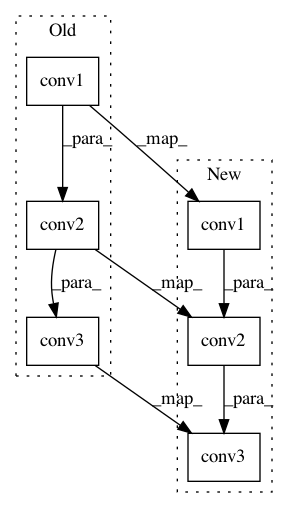

e7512f6bd434ef89296298a8bd16044917d7ce68,examples/ppi.py,Net,forward,#Net#Any#Any#,30
Before Change
self.lin3 = torch.nn.Linear(4 * 256, train_dataset.num_classes)
def forward(self, x, edge_index):
x = F.elu(self.conv1(x, edge_index) + self.lin1(x))
x = F.elu(self.conv2(x, edge_index) + self.lin2(x))
x = self.conv3(x, edge_index) + self.lin3(x)
return x
After Change
self.conv3 = SAGEConv(512, train_dataset.num_classes)
def forward(self, x, edge_index):
x = F.relu(self.conv1(x, edge_index))
x = F.relu(self.conv2(x, edge_index))
x = self.conv3(x, edge_index)
return x
device = torch.device("cuda" if torch.cuda.is_available() else "cpu")
In pattern: SUPERPATTERN
Frequency: 4
Non-data size: 6
Instances
Project Name: rusty1s/pytorch_geometric
Commit Name: e7512f6bd434ef89296298a8bd16044917d7ce68
Time: 2020-09-23
Author: matthias.fey@tu-dortmund.de
File Name: examples/ppi.py
Class Name: Net
Method Name: forward
Project Name: rusty1s/pytorch_geometric
Commit Name: a7fd67bd27f83cf7c9438626bb642e1928dbe814
Time: 2020-09-23
Author: matthias.fey@tu-dortmund.de
File Name: examples/ppi.py
Class Name: Net
Method Name: forward
Project Name: chainer/chainercv
Commit Name: 42577c597fb82f8f022feda31649fb0a04bf2ffb
Time: 2017-10-04
Author: yuyuniitani@gmail.com
File Name: chainercv/links/model/resnet/building_block.py
Class Name: BottleneckA
Method Name: __call__
Project Name: chainer/chainercv
Commit Name: 9cc885ab04b19221b53ce47b6c8f053b25942fcf
Time: 2019-02-20
Author: yuyuniitani@gmail.com
File Name: chainercv/links/model/mask_rcnn/mask_head.py
Class Name: MaskHead
Method Name: __call__